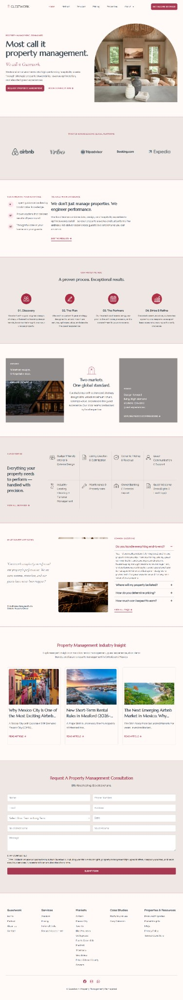

The challenge

← Back to Work
Property management
Guestwork Property Management
Property owners are not only buying management. They are handing someone an asset, their guests and a part of their income.
Platform usedWordPress
Project typeProperty management
The story
What the project was really solving.
That means the website has to do more than list services. It has to make the management approach feel credible before an owner is ready for a consultation.
I shaped the journey around owner intent: explain the service, show what makes the approach different, then keep the consultation path close once the owner has enough information to judge fit.
What I changed
- Write and structure around property-owner concerns.
- Explain the service and approach before the CTA.
- Use hierarchy to separate proof, process and service details.
- Keep the consultation route visible without making the site feel pushy.
Where it ended